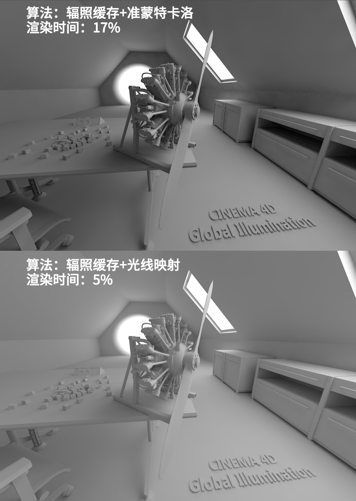
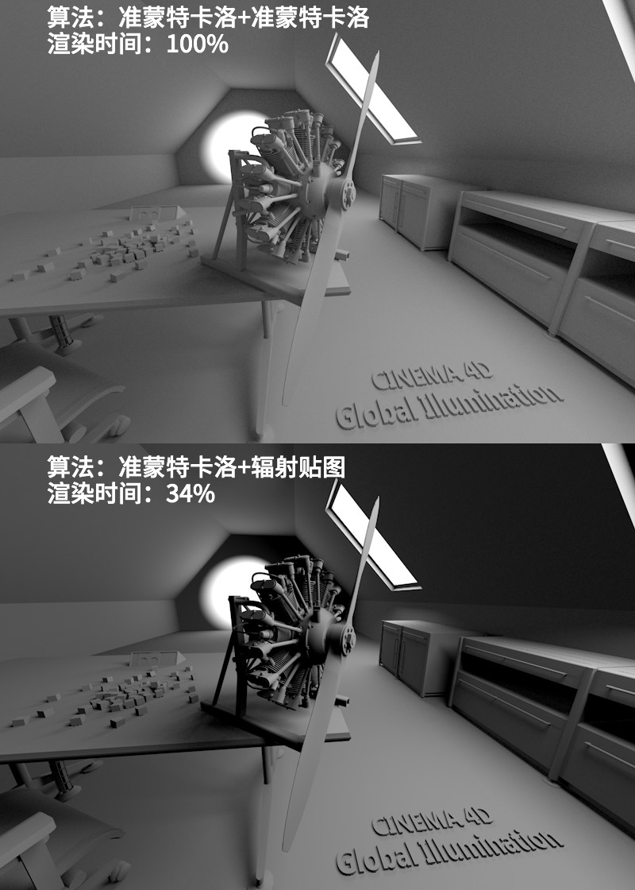

Function available in CINEMA 4D Prime, Visualize, Broadcast, Studio & BodyPaint 3D
渲染示例
这里是一些渲染示例，它们各自使用了不同的全局光照方式。
下面的场景是由穿过两扇窗户的天空照亮的，这两扇窗户被设置为 GI 入口，并且在背面的墙上有一个点光源。唯一的变量是全局光照方式，剩下的其他设置为中等质量。有些渲染中出现了杂斑，可以使用更高的采样来提高它的质量。
注意，渲染时间只是作为指标，并会在其他工程中变化。（如果启用了建立辐射贴图，在使用辐照缓存+光线映射和准蒙特卡洛+光线映射的情况下，渲染时间会戏剧性地减少）。100%的渲染时间是最准确的准蒙特卡洛+准蒙特卡洛。
 |  |
 |  |
比较各种方式，可以注意到以下几点：
- 与准蒙特卡洛（作为首次反弹算法）相比，简化的辐照缓存的渲染结果相似，而速度要快得多。
- 在使用光线映射时，由于大量的光线反射，室内空间被渲染得比较明亮。反之：
- 其他的二次反弹算法渲染结果较暗，即使它们允许最高的8次反射并且渲染时间更长。
- 首次反弹算法使用准蒙特卡洛会让投影准确。
- 辐照缓存+准蒙特卡洛容易出现闪烁。